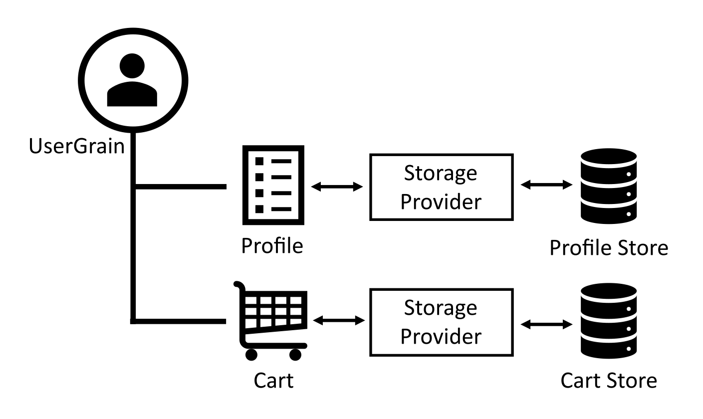

持久化
Grains可以具有多个与之关联的命名持久数据对象。在激活Grains期间会从存储中加载此状态，以便在请求期间可以使用它们。Grain持久化使用可扩展的插件模型，因此可以使用任何数据库的存储提供程序。此持久化模型仅出于简化目的而设计，并不旨在涵盖所有数据访问模式。Grains还可以直接访问数据库，而无需使用Grains持久化模型。

在上图中，UserGrain有一个Profile状态和Cart状态，每个状态都存储在单独的存储系统中。
目标
- 每个Grains有多个命名的持久数据对象。
- 多个配置的存储提供程序，每个存储提供程序可以具有不同的配置并由不同的存储系统支持。
- 存储提供商可以由社区开发和发布。
- 存储提供者可以完全控制他们如何在持久化后备存储中存储Grains状态数据。结论：Orleans没有提供全面的ORM存储解决方案，但允许自定义存储提供商在需要时支持特定的ORM要求。
配套
可以在以下位置找到OrleansGrains存储提供商NuGet。官方维护的软件包包括：
- Microsoft.Orleans.Persistence.AdoNet适用于ADO.NET支持的SQL数据库和其他存储系统。有关更多信息，请参见ADO.NETGrain持久化。
- Microsoft.Orleans.Persistence.AzureStorage通过Azure Table Storage API访问Azure存储，包括Azure Blob存储，Azure表存储和Azure CosmosDB。有关更多信息，请参见Azure存储Grain持久化。
- Microsoft.Orleans.Persistence.DynamoDB适用于Amazon DynamoDB。有关更多信息，请参见Amazon DynamoDBGrain持久化。
API
Grains与它们的持久状态相互作用IPersistentState <TState>哪里State是可序列化状态类型：
Grains通过IPersistentState<TState>（其中<TState>为其可序列化状态类型）与它们的持久化状态交互。
public interface IPersistentState<TState> where TState : new()
{
TState State { get; set; }
string Etag { get; }
Task ClearStateAsync();
Task WriteStateAsync();
Task ReadStateAsync();
}
IPersistentState <TState>的实例作为构造函数参数注入到Grains中。这些参数可以用[PersistentState(stateName，storageName)]属性来标识要注入的状态的名称以及提供状态存储提供程序的名称。以下示例通过将两个命名状态注入到UserGrain构造函数：
public class UserGrain : Grain, IUserGrain
{
private readonly IPersistentState<ProfileState> _profile;
private readonly IPersistentState<CartState> _cart;
public UserGrain(
[PersistentState("profile", "myGrainStorage")] IPersistentState<ProfileState> profile,
[PersistentState("cart", "cartStorage")] IPersistentState<CartState> cart,
)
{
_profile = profile;
_cart = cart;
}
}
即使它们是同一类型，不同的Grain类型也可以使用不同的配置存储提供程序：例如，两个不同的Azure Table Storage提供程序实例连接到不同的Azure存储帐户。
读取状态
当激活grains时，将自动读取grains状态，但是grains负责在必要时显式触发任何更改的grains状态的写入。
如果某个Grains希望从后备存储中明确重新读取该Grains的最新状态，则该Grains应调用ReadStateAsync()方法。
这将通过存储提供程序从持久存储重新加载Grain状态，并且当ReadStateAsync()任务完成时，将覆盖和替换之前的内存状态副本。
使用以下命令访问状态值State属性。例如，以下方法访问上面的代码中声明的配置文件状态：
public Task<string> GetNameAsync() => Task.FromResult(_profile.State.Name);
无需调用ReadStateAsync()在正常操作期间：在激活期间自动加载状态。然而，ReadStateAsync()可以用来刷新外部修改的状态。
见失败模式以下部分提供了有关错误处理机制的详细信息。
写入状态
状态可以通过State属性。修改后的状态不会自动保持。相反，开发人员通过调用WriteStateAsync()方法。例如，以下方法更新一个属性State并保持更新状态：
public async Task SetNameAsync(string name)
{
_profile.State.Name = name;
await _profile.WriteStateAsync();
}
从概念上讲，Orleans运行时将在任何写入操作期间获取Grains状态数据对象的深层副本以供其自己使用。在幕后，运行时可能在保留预期的逻辑隔离语义的前提下，使用优化规则和试探法避免在某些情况下执行部分或全部深度复制。
见失败模式以下部分提供了有关错误处理机制的详细信息。
状态清理
ClearStateAsync()方法清除存储中的Grains状态。根据提供者，此操作可以选择完全删除grains状态。
入门
在Grains可以使用持久化之前，必须在silos上配置存储提供程序。
首先，配置存储提供程序：
var host = new HostBuilder()
.UseOrleans(siloBuilder =>
{
// Configure Azure Table storage using the name "profileStore"
siloBuilder.AddAzureTableGrainStorage(
name: "profileStore",
configureOptions: options =>
{
// Use JSON for serializing the state in storage
options.UseJson = true;
// Configure the storage connection key
options.ConnectionString = "DefaultEndpointsProtocol=https;AccountName=data1;AccountKey=SOMETHING1";
});
// -- other options
})
.Build();
现在，已经使用名称配置了存储提供程序“ profileStore”，我们可以从Grains访问此提供程序。
持久状态可以通过两种主要方式添加到Grains中：
- 通过注入
IPersistentState <TState>进入Grains的构造函数 - 通过继承
Grain<TState>
推荐的添加Grains存储方式的方法是通过注入IPersistentState<TState>并关联[PersistentState("stateName"," providerName")]属性到Grains的构造函数。有关详细信息GrainsTState>， 见下文。仍支持此功能，但被认为是旧版。
声明一个类来保持我们的Grains状态：
[Serializable]
public class ProfileState
{
public string Name { get; set; }
public Date DateOfBirth
}
注入IPersistentState <配置文件状态>到Grains的构造函数中：
public class UserGrain : Grain, IUserGrain
{
private readonly IPersistentState<ProfileState> _profile;
public UserGrain([PersistentState("profile", "profileStore")] IPersistentState<ProfileState> profile)
{
_profile = profile;
}
}
注意：配置文件状态在注入到构造函数中时不会被加载，因此那时访问它是无效的。该状态将在OnActivateAsync调用。
现在，grain具有持久状态，我们可以添加读取和写入状态的方法：
public class UserGrain : Grain, IUserGrain
{
private readonly IPersistentState<ProfileState> _profile;
public UserGrain([PersistentState("profile", "profileStore")] IPersistentState<ProfileState> profile)
{
_profile = profile;
}
public Task<string> GetNameAsync() => Task.FromResult(_profile.State.Name);
public async Task SetNameAsync(string name)
{
_profile.State.Name = name;
await _profile.WriteStateAsync();
}
}
持久化操作的失败模式
读取操作的失败模式
存储提供程序在初始读取该特定Grain的状态数据期间返回的故障将导致Grain的激活操作失败;在这种情况下，将不调用该Grain的OnActivateAsync()生命周期回调方法。
导致激活该Grain的失败的原始请求将像在Grain激活期间任何其他故障一样返回给调用方。
存储提供程序在读取特定Grains的状态数据时遇到失败，将导致ReadStateAsync() 任务失败。Grains可以选择处理或忽略该故障Task，就像其他任何东西一样Task在Orleans。
由于缺少/错误的存储提供程序配置，任何在silos启动时无法加载消息的尝试都会返回永久错误Orleans.BadProviderConfigException。
写入操作的失败模式
存储提供程序在写入特定Grains的状态数据时遇到失败，将导致WriteStateAsync() 任务失败。通常，这将意味着Grain调用将把错误返回给客户端调用者，前提是WriteStateAsync()任务被正确地链接到这个Grain方法最终返回的Task中。但是，某些高级方案可能会编写Grain代码来专门处理此类错误，就像它们可以处理任何其他错误一样Task。
执行错误处理/恢复代码的Grains必须捕获WriteStateAsync()任务的异常/错误，而不重新抛出以表示它们已成功处理了写入错误。
推荐建议
使用JSON序列化或其他版本容忍的序列化格式
代码会随着时间的推移而发展，并且通常还包括存储类型。为了适应这些更改，应配置适当的序列化方式。对于大多数存储提供商而言，Json选项或类似选项可用于将JSON用作序列化格式。确保在发展数据合同时，已经存储的数据仍然可以加载。
使用Grain为Grains指定存储
注意：使用grains<T>为Grainsz指定存储考虑为遗留功能：应使用以下方式添加Grains存储IPersistentState <T>如前所述。
继承自的Grains类grains<T>(哪里T是需要保留的特定于应用程序的状态数据类型)，将从指定存储中自动加载其状态。
此类Grains标有[StorageProvider]该属性指定一个存储提供程序的命名实例，该实例用于读取/写入此Grains的状态数据。
[StorageProvider(ProviderName="store1")]
public class MyGrain : Grain<MyGrainState>, /*...*/
{
/*...*/
}
的grains<T>基类定义了以下方法供子类调用：
protected virtual Task ReadStateAsync() { /*...*/ }
protected virtual Task WriteStateAsync() { /*...*/ }
protected virtual Task ClearStateAsync() { /*...*/ }
这些方法的行为对应于IPersistentState <TState>较早定义。
创建存储提供程序
状态持久化API有两部分：通过IPersistentState <T>要么grains<T>，
以及以IGrainStorage为中心的存储提供程序API——存储提供程序必须实现的接口。
/// <summary>
/// Interface to be implemented for a storage able to read and write Orleans grain state data.
/// </summary>
public interface IGrainStorage
{
/// <summary>Read data function for this storage instance.</summary>
/// <param name="grainType">Type of this grain [fully qualified class name]</param>
/// <param name="grainReference">Grain reference object for this grain.</param>
/// <param name="grainState">State data object to be populated for this grain.</param>
/// <returns>Completion promise for the Read operation on the specified grain.</returns>
Task ReadStateAsync(string grainType, GrainReference grainReference, IGrainState grainState);
/// <summary>Write data function for this storage instance.</summary>
/// <param name="grainType">Type of this grain [fully qualified class name]</param>
/// <param name="grainReference">Grain reference object for this grain.</param>
/// <param name="grainState">State data object to be written for this grain.</param>
/// <returns>Completion promise for the Write operation on the specified grain.</returns>
Task WriteStateAsync(string grainType, GrainReference grainReference, IGrainState grainState);
/// <summary>Delete / Clear data function for this storage instance.</summary>
/// <param name="grainType">Type of this grain [fully qualified class name]</param>
/// <param name="grainReference">Grain reference object for this grain.</param>
/// <param name="grainState">Copy of last-known state data object for this grain.</param>
/// <returns>Completion promise for the Delete operation on the specified grain.</returns>
Task ClearStateAsync(string grainType, GrainReference grainReference, IGrainState grainState);
}
通过实现此接口来创建自定义存储提供程序，并注册该实施。有关现有存储提供程序实现的示例，请参见AzureBlobGrainStorage。
存储提供程序语义
特定于不透明的提供者Etag值(string)可能由存储提供者设置为读取状态时填充的Grains状态元数据的一部分。一些提供商可能选择将此保留为null如果他们不使用Etag。
当存储提供程序检测到Etag约束违反_should_时，任何执行写操作的尝试都会导致写Task出现故障，并出现瞬时抛出Orleans.InconsistentStateException异常并并包装基础存储异常。
public class InconsistentStateException : OrleansException
{
public InconsistentStateException(
string message,
string storedEtag,
string currentEtag,
Exception storageException)
: base(message, storageException)
{
this.StoredEtag = storedEtag;
this.CurrentEtag = currentEtag;
}
public InconsistentStateException(string storedEtag, string currentEtag, Exception storageException)
: this(storageException.Message, storedEtag, currentEtag, storageException)
{ }
/// <summary>The Etag value currently held in persistent storage.</summary>
public string StoredEtag { get; private set; }
/// <summary>The Etag value currently held in memory, and attempting to be updated.</summary>
public string CurrentEtag { get; private set; }
}
来自存储操作的任何其他失败条件都会导致返回的Task被中断，并出现一个异常，指示底层存储问题。在许多情况下，此异常可能会返回给调用方，后者通过在Grains上调用方法来触发存储操作。重要的是要考虑调用者是否可以反序列化此异常。例如，客户端可能尚未加载包含异常类型的特定持久化库。因此，建议将异常转换为可以传播回调用方的异常。
数据映射
各个存储提供者应决定如何最好地存储Grains状态-blob(各种格式/序列化形式)或每字段列是显而易见的选择。
注册存储提供商
Orleans运行时将从服务提供商那里解析存储提供商(IServiceProvider)创建Grain时。运行时将解析一个实例IGrainStorage。如果存储提供者已命名，例如通过[PersistentState(stateName，storageName)]属性，然后是的命名实例IGrainStorage将得到解决。
注册的命名实例IGrainStorage， 使用IServiceCollection.AddSingletonNamedService扩展方法，可以参考以下AzureTableGrainStorage提供程序。